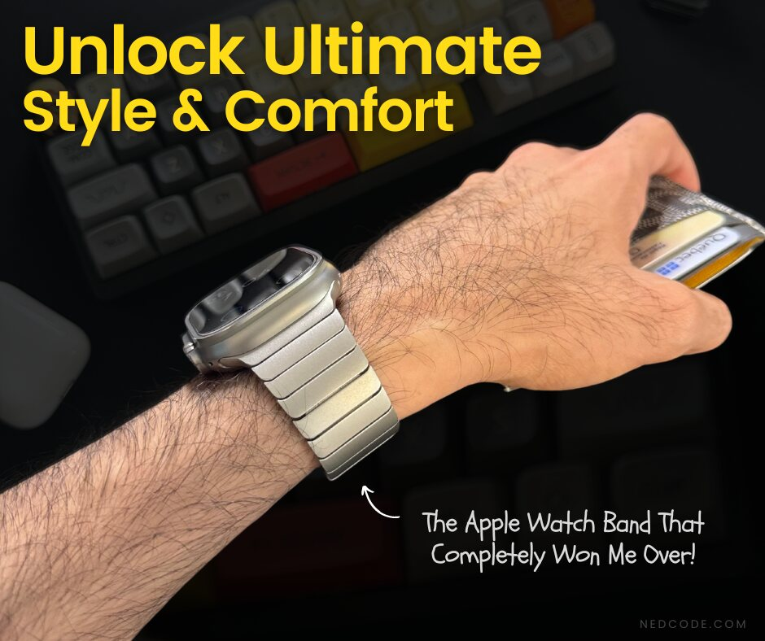
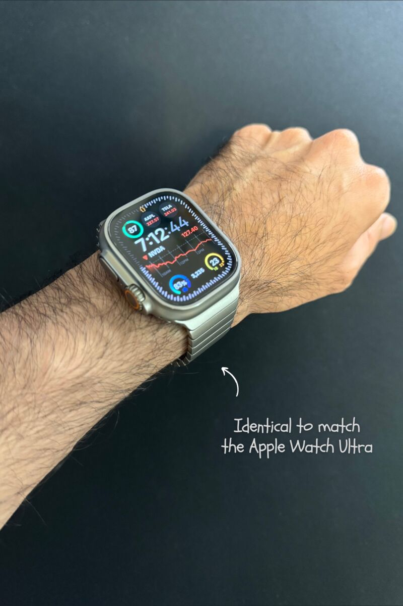
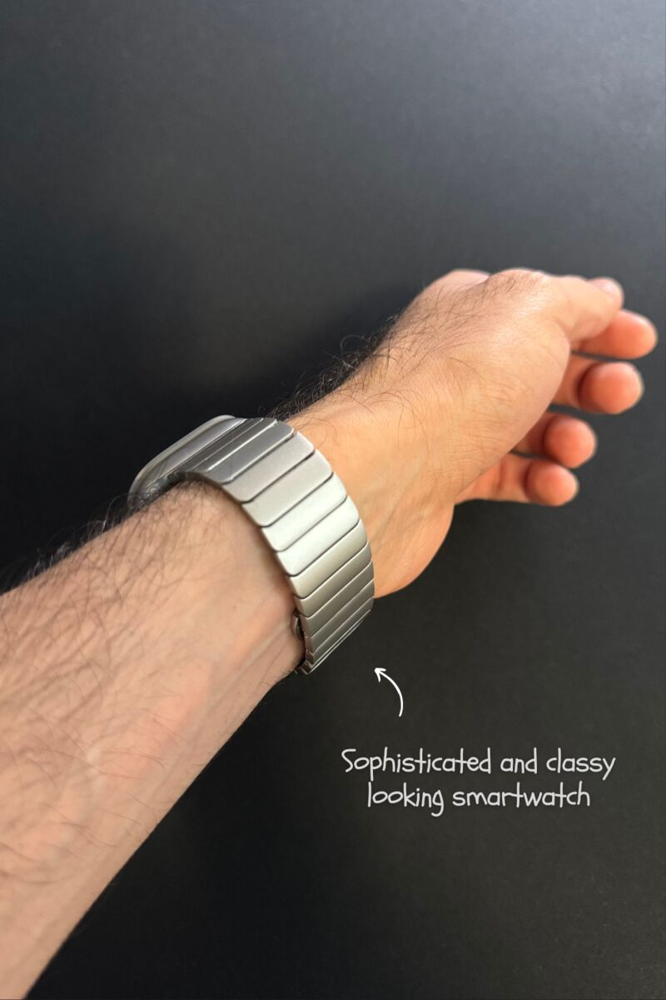
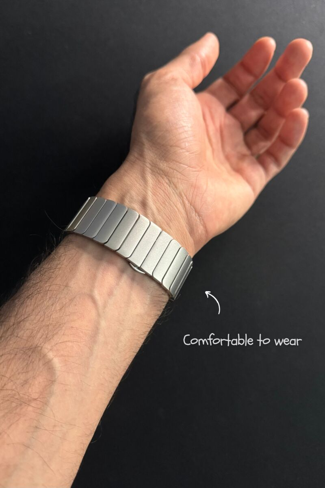
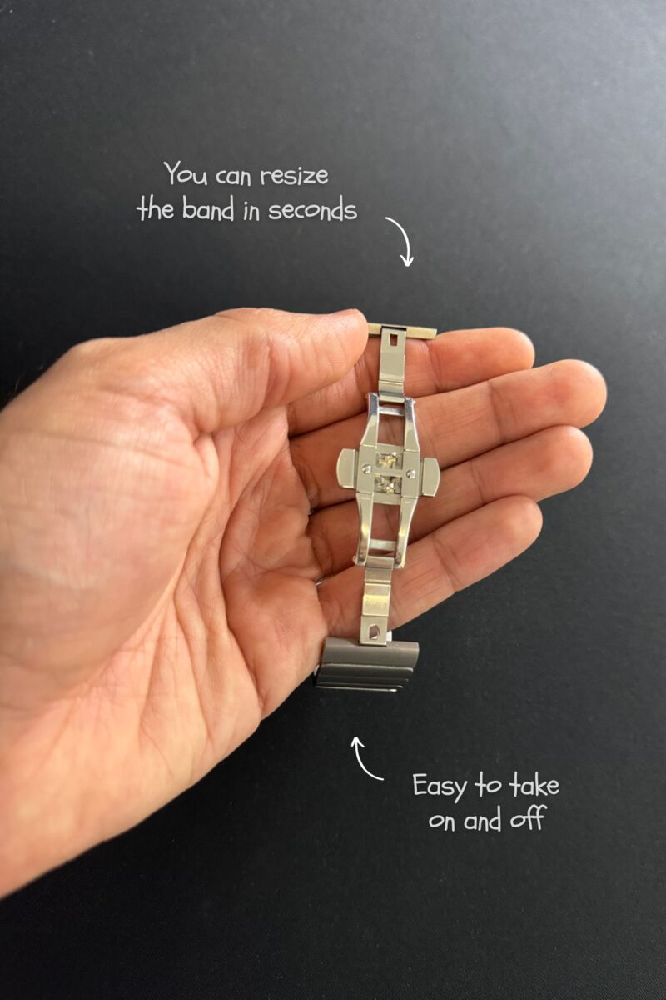

Tech · Review
The Apple Watch Band That Completely Won Me Over

I found a stainless steel band that fits my Apple Watch Ultra 2 perfectly. And it doesn’t pull a single arm hair.
Fits more than the Ultra
It’s compatible with a bunch of models, like Series 9, Series 8 (45mm) and Series 7 (44mm, 42mm), and more.

Comfy, even with hairy arms
The best part? It’s super comfy, especially if you’ve got hairy arms like me. Unlike some bands that can be a pain. Literally! This one is gentle on your skin and hair, and it feels just like the original Apple bracelet, giving my watch a sleek, modern look.


The one catch: weight
I’ll be honest: it’s got a bit of weight to it. Some folks might notice it more than others. But that weight is what gives this band its durability. Considering the price, I’d say it’s a steal.

My take
It’s held up really well, and I’ve been recommending it to all my friends who are into tech. If you want to upgrade your Apple Watch without breaking the bank, this is it. Once you try it, you won’t want to go back.
FAQ
Which Apple Watch models does this band fit?
It fits the Apple Watch Ultra 2, and it’s compatible with models like Series 9, Series 8 (45mm) and Series 7 (44mm, 42mm), among others.
Does it pull arm hair?
No. It’s gentle on skin and hair, even on hairy arms.
Is it heavy?
It has a bit of weight, which some people may notice, but that weight is what makes it durable.
Is it easy to resize?
Yes. Resizing it is straightforward and quick.
Want to upgrade your Apple Watch without breaking the bank?
View it on AmazonThis post contains links to Amazon.